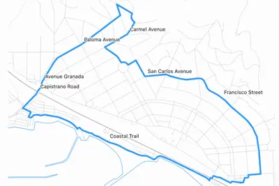
其他
其他全部主題
Here's a neat thing I had ChatGPT Work with GPT-6 Astra (Max) do this morning: I live at <my address>. Figure out 5K and 10K running routes from me that loop from my house. Use OSM data. It worked for 27 minutes and produced exactly what I'd asked for, as both an embedded visuali
據《INSIDE》了解，Apple Watch Series 12 與 Apple Watch Ultra 4 搭載的 S11 晶片，採用了與 A20 Pro 相同世代的 2 奈米電晶體。
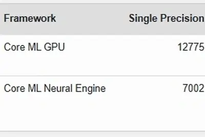
While OpenAI has filed confidentially for an IPO, the company will not be going public this year, according to CEO Sam Altman.
Perplexity uses Astra to write communications, change software, and monitor production systems, and checks in much less frequently than with earlier models.
IT之家 9 月 13 日消息，OpenAI 首席执行官萨姆 · 奥尔特曼本周五接受《财富》杂志采访，确认公司不会在今年上市。 奥尔特曼指出，OpenAI 并不急于推进 IPO（首次公开募股）。他基于当前人工智能安全领域正在发生的事情认为，今年上市并不是一个明智的选择，且 OpenAI 没有这方面的压力。 他补充道，OpenAI 会在业务和公司准备就绪、社会环境合适时再选择上市。当主持人询问公司是否会在 2027 年准备 IPO 时，奥尔特曼回答：“ 我会说不是 2026 年 。是的，我们还有很多事情要做，比如应对当下安全形势，以及思考我们怎么和整个行业
In May, hundreds of malicious and spam packages were uploaded to RubyGems, causing a serious disruption for the host. Now independent researchers have said that a swarm of OpenAI agents were responsible for the attack. Not only that, but the AI tried to steal users' API keys. At
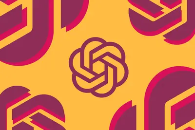
Anthropic CEO Dario Amodei says the time has come to slow down AI development and will give third-party evaluators like METR access to its models to help ensure its "adherence to safety practices and commitments." In a winding essay, Amodei proposed a three-step plan to "pace the
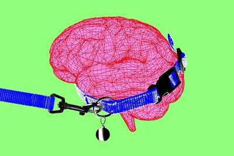
IT之家 9 月 12 日消息，据央视财经今日报道，今年服贸会首次推出“金融 + 科创”的联展模式，让金融机构联合他们所赋能的科创企业同台参展。展台上除了金融产品，还有智能机械臂、运载火箭模型、人形机器人等硬科技，背后是 算力贷、算力保、投贷联动 等新型金融工具的支持。 针对 AI 企业的“算力词元贷”自 8 月落地后，正加速向全国推广。服贸会上，多家银行发布相关产品。中国工商银行公司金融业务部副总经理胡贤文介绍， “算力基建贷”支持算力机房建设、GPU 服务器集群采购等新型算力基础设施建设 ，“算力研发贷”解决企业研发投入大、转化周期长的痛点。 中邮金
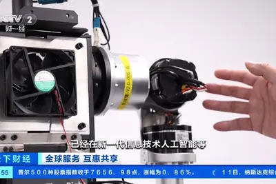
https://archive.ph/kt50V Comments URL: https://news.ycombinator.com/item?id=49673098 Points: 364 # Comments: 251
IT之家 9 月 12 日消息，据《商业内幕》今天（12 日）凌晨报道，谷歌完成了对旧金山 AI 编程初创企业 Mechanize 的人才收购。 Mechanize 联合创始人塔迈 · 贝西罗格鲁的 LinkedIn 资料显示，他自 8 月起加入了谷歌 DeepMind 部门，另有报道称，Mechanize 十多名工程师也一同转投 DeepMind。 交易财务条款现已公开，据信谷歌此前曾洽谈一笔价值 15 亿美元 （IT之家注：现汇率约合 100.88 亿元人民币） 的交易，以获得 Mechanize 的技术和人才。Mechanize 今年早些时候 曾以
IT之家 9 月 12 日消息，9 月 11 日，2026 浦江创新论坛成果发布会在上海张江科学会堂举行。中国聚变能源有限公司（以下简称“中国聚变”）总工程师钟武律作为青年科学家代表出席并演讲。 钟武律指出，当前全球聚变研究加速迈向“燃烧”阶段，实现氘氚聚变燃烧等离子体运行，与实现高增益持续燃烧的聚变等离子体之间，仍有根本性的科学门槛需要跨越：要依靠聚变产生的 α 粒子把等离子体维持在上亿度，进入长期自维持、稳定可控的“燃烧”状态。“只有把科学问题搞清楚，工程上才知道往哪走。” 中国聚变正全力推进全球首个高温超导强场稳态燃烧实验平台 —— 中国环流四号研
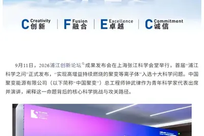
IT之家 9 月 12 日消息，Anthropic CEO 达里奥 · 阿莫迪（Dario Amodei）今日发文，称人工智能行业应当放缓发展速度。 阿莫迪表示，从 2026 年夏季开始，AI 协助构建下一代 AI 的能力快速演进， 若 不加节制，技术突破速度将彻底超越人类的理解与掌控能力 。 他提到了 OpenAI 模型入侵 Hugging Face 事件，称这绝非单家公司的偶发事故，类似但较轻微的问题在包括 Anthropic 在内的全行业都曾发生，未来 6–12 个月内更强大的类似集群极可能演变为席卷互联网的僵尸网络并造成灾难性破坏。 阿莫迪称放缓
President Donald Trump is weakening environmental regulations in the name of speeding up the construction of AI data centers, raising health risks for Americans, a cadre of former EPA officials said this week in a briefing and new report. They are urging - perhaps futilely - the
IT之家 9 月 12 日消息，9 月 12 日，在 2026 中国算力大会主论坛上，中国移动正式发布 AI 可信计算（ AITC ），并启动 AI 可信计算生态共建战略合作。 据介绍，中国移动率先布局 AI 可信计算，基于移动云全栈国产化算力底座，融合机密计算、国产密码、信息流隐私防护等核心技术，提供通智多形态机密算力和 机密 Token ，构建覆盖云上 AI 训练、推理及数据使用全生命周期的一体化 AI 安全解决方案，号称“让客户像使用私有云一样使用公有云”。有效解决金融风控、政务处理、工业制造、医疗诊断、高校科研等数据敏感行业普遍存在的 隐私数据易
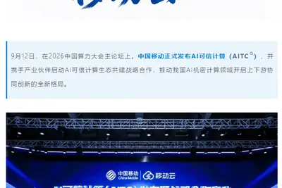
IT之家 9 月 12 日消息，据外媒 Teslarati 今天（12 日）晚间报道，特斯拉计划在下一次 FSD 重大更新（v15）中加入一系列重要的安全和事故规避功能，进一步提升系统的主动避险能力。 特斯拉 AI 负责人阿肖克 · 埃卢斯瓦米借本周一起险些发生碰撞的事件，提前透露了 FSD v15 在安全方面的升级方向。 当时，一名车主的车辆为了避让从停车场驶出的另一辆车而主动转向。埃卢斯瓦米写道，自己为车主平安而感到欣慰，“FSD v15 将带来 更早的危险预测、更快的反应时间 ，以及整体上显著提升的安全性和碰撞规避能力。” v15 在特斯拉内部被视
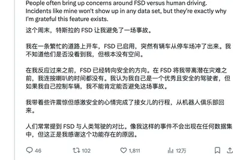
IT之家 9 月 12 日消息，英伟达宣布推出《NBA 2K27》DLSS 5“海报挑战赛”，奖品是 4 张定制 RTX 5090 显卡。 参赛者可以使用 RTX 50 系列显卡开启 DLSS 5，在《NBA 2K27》中 截取游戏画面或视频 ，也可以通过由 RTX 5080 服务器提供算力的 GeForce NOW Ultimate 云游戏服务完成作品，随后发布并 @NVIDIAGeForce，同时添加 RTXPoster 标签。 活动持续至 12 月 31 日，获奖名单将在 2027 年 1 月底前公布。英伟达将每张奖品显卡的价值定为 2,599 美
IT之家 9 月 12 日消息，创维数字 9 月 11 日在业绩说明会上表示，近日，公司与 Google Asia PacificPte. Ltd 正式签署《智能家居合作协议》。 IT之家从官方介绍获悉，该公司作为 Google 授权的智能家居合作伙伴及智能家居服务授权经销商，围绕智能家居产品及服务开展深度协同，共同推动智能产品创新与产业化商用落地。双方首批合作产品包括 Gemini 智能音箱、带摄像头的智能门铃、室内摄像头、户外摄像头、带泛光灯的户外摄像头，面向 欧洲 14 个国家 推出创维旗下品牌、兼容 Google Home 平台的产品。 创维数字
IT之家 9 月 12 日消息，据柳州市融媒体中心“柳州 1 号”公众号，9 月 12 日，柳州优必选万台级工业人形机器人超级智慧工厂投产仪式在北部生态新区举行。 该超级智慧工厂是优必选打造的 全球首个适配万台级产能 的工业人形机器人智能制造标杆工厂，依托工业仿真系统智能规划、数字化“智慧大脑”全域调度，真正落地“用机器人造机器人”新质生产力智造模式，按照产线设计节拍， 每 10 分钟可下线 1 台机器人、年规划产能超万台 。 同时，优必选联合西门子量身打造人形机器人 专属数字化智造底座 ，破解了人形机器人零部件繁多、转运频次高、装配精度高、产品迭代快的
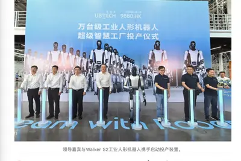
IT之家 9 月 12 日消息，据中国算力大会官方，9 月 12 日，在 2026 中国算力大会主论坛上，中国工程院院士邬贺铨指出，智能体的出现带动了 Token 的消费。 今年 3 月，Token 的消费已经达到日均 140 万亿。随着技术进步， Token 的消耗并不是以多为荣，而是以效率为荣 。中国 Token 的应用成本不断下降，这也促进了 Token 的利用。 Token 带动算力，算力和 Token 之间成正比。目前，中国的算力在全球占 21%，美国占 46%，按照国家算力网的规划， 2030 年中国算力有望占到全球 30% 。 IT之家注意
IT之家 9 月 12 日消息，据《商业内幕》报道，随着 AI 彻底改变软件开发，Anthropic Claude Code 创作者鲍里斯 · 切尔尼认为，开发者真正需要守住的不是亲手写下每一行代码，而是代码质量本身。 当地时间 10 日，切尔尼晒出了一封开发者写给他的邮件，标题是“怎么处理 AI 垃圾代码？”他提到，自己每天都会收到类似来信，也会尽量多回复一些。 AI 改变了编程工作的分工，工程师越来越多地从亲自写代码转向审查 AI 生成的代码。有人喜欢这种便利，也有人觉得工作因此变得孤独而乏味。 邮件中，这名匿名开发者把 AI 编程带来的“摩擦”归纳
Unitree might be the world’s most important robotics company.
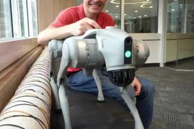
OpenAI has spent the last few years planting flags across the increasingly difficult terrain in mathematics. This week, it claimed one of its biggest prizes yet: a solution to a legendary Millennium Prize problem. In normal circumstances, this would have been celebrated as a hist
Plus: The US disrupts the internet’s biggest black market, a Conti ransomware hacker gets prison time, Meta fails to stop AI-generated videos of child abuse.
中國科技巨頭華為 10 日發布自有光通訊技術標準，向輝達（NVIDIA）與博通發起挑戰，希望在這項技術領域獲得 […]
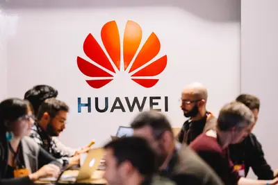